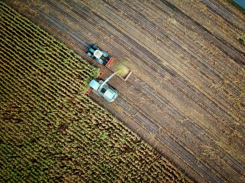
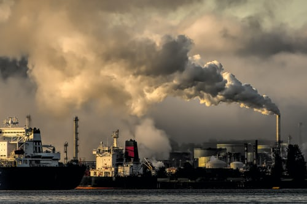
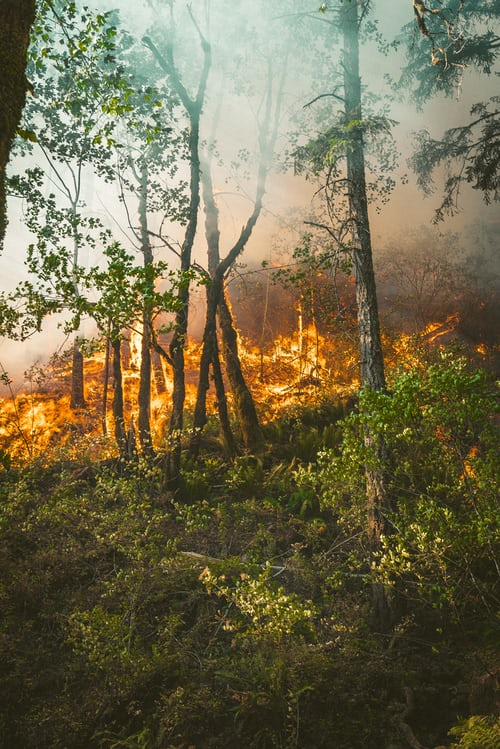

Climate change refers to the change in the environmental conditions of the earth. This happens due to many internal and external factors. The climatic change has become a global concern over the last few decades. Besides, these climatic changes affect life on the earth in various ways. These climatic changes are having various impacts on the ecosystem and ecology. Due to these changes, a number of species of plants and animals have gone extinct.
Here are some reasons due to which climate change is caused-
Planting crops and rearing animals releases many different types of greenhouse gases into the air. For example, animals produce methane, which is 30 times more powerful than carbon dioxide as a greenhouse gas. The nitrous oxide used for fertilisers is ten times worse and is nearly 300 times more potent than carbon dioxide.
 Mankind’s increased use of fossil fuels such as coal, oil and gas to generate electricity, run cars and other forms of transport, and power manufacturing and industry.
Forests remove and store carbon dioxide from the atmosphere. Cutting them down means that carbon dioxide builds up quicker since there are no trees to absorb it. Not only that, trees release the carbon they stored when we burn them.
“Climate change is no longer some far-off problem; it is happening here, it is happening now"
-Barack Obama